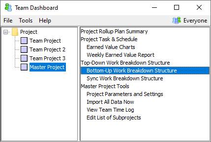

Different organizations use different approaches to the planning of a master project. One common approach is to conduct simultaneous launch meetings for all of the team projects that make up a master project. If your organization uses this approach, you will find the information in this section useful.
During a launch, most planning activities will be performed in the Work Breakdown Structure Editor. It is easy for several different subteams to be working in the WBS Editor at the same time:
If individuals have already joined the team project, individuals can also open the WBS Editor using the corresponding option on the script menu in their personal dashboard. If you open the WBS Editor in this way and intend to edit the overall team plan, you will probably want to open the WBS Editor's Team menu and make certain the box to "Optimize Editing Operations for ..." is unchecked. (For more information on this feature, see the help topic on personal editing optimized mode.)
There are a small number of launch planning tasks that are not performed within the WBS Editor. For example:
These activities would be performed in the Team Dashboard itself, not in the WBS Editor. To perform these activities, you must open the Team Dashboard in read-write mode. However, only one person can have the Team Dashboard open in read-write mode at a time. As a result, the various subteams may need to coordinate with each other to determine who is using the Team Dashboard at any given time.
Since these activities represent a relatively small portion of the overall launch, it is very possible that the teams won't need to perform these activities simultaneously. If a particular subteam needs read-write access to the Team Dashboard and they see that another team has it open, it may be sufficient to contact the other team and ask them to close the Team Dashboard if they are not using it.
If two subteams need to create their quality plans simultaneously, this can be accomplished by using a special technique:
You can view this page from another
computer by visiting:
http://computer-name:3000/Project/Path/+/ABC-v1/team_tools.shtm
| Important: Because organizations have different network configurations, you should perform a dry run of these steps before your launch. This way, if you encounter connectivity problems, you can enlist your local tech support team in finding a resolution before the launch begins, and avoid disruptions to the team planning process. See the Network Troubleshooting help topic for more help. If you discover that your network will not support this special technique, you may need to schedule your various quality planning sessions so they do not overlap. |
While the individual project teams are developing their detailed plans, it is easy to see a master project view of the planning progress. In the Team Dashboard, select the master project from the tree on the left, then select Bottom-Up Work Breakdown Structure from the list on the right.

The bottom up Work Breakdown Structure will be displayed.

This window displays a WBS containing all of the components and tasks declared by all of the team projects that belong to this master project. Since the data is rolled up and computed, it is read-only. If you display the Bottom Up Time Panel, it will show the planned completion dates of each team project.
The data in this window will update in near-real-time. Each time a team project saves changes to their WBS, this window will see the changes within a few seconds, and recalculate its display.